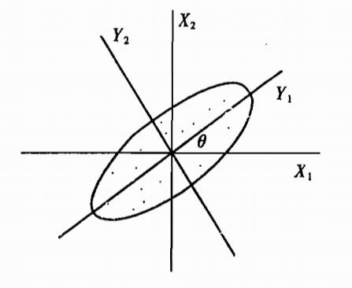
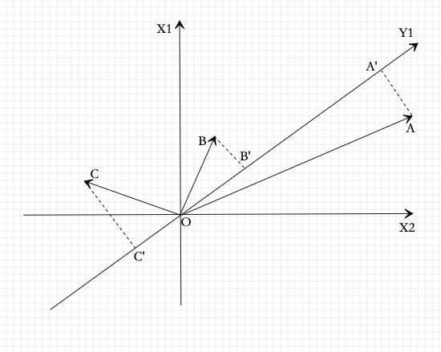

主成分分析(PCA)是一种常用的无监督学习方法，这一方法利用正交变换把由线性相关变量表示的观测数据转换为少数几个由线性无关变量表示的数据，线性无关的变量称为主成分。
主成分的个数通常小于原始变量的个数，所以主成分分析属于降维方法。
主成分分析主要用于发现数据中的基本结构，即数据中变量之间的关系。
总体主成分分析
基本想法
主成分分析中，
首先对给定数据进行规范化，使得数据每一变量的平均值为0，方差为1
对数据进行正交变换。原来由线性相关变量表示的数据，通过正交变换变成由若干个线性无关的新变量表示的数据。新变量是可能的正交变换中变量的方差的和(信息保存)最大的，方差表示在新变量上的信息的大小。
将新变量依次称为第一主成分、第二主成分等。
通过主成分分析，可以利用主成分近似地表示原始数据(可理解为发现数据的基本结构)，也可以把数据由少数主成分表示(这可理解为对数据降维)。
数据集合中的样本由实数空间(正交坐标系)中的点表示，空间的一个坐标轴表示一个变量，规范化处理后得到的数据分布在原点附近。对原坐标系中的数据进行主成分分析等价于进行坐标系旋转变换，将数据投影到新坐标系的坐标轴上；新坐标系的第一坐标轴、第二坐标轴等分别表示第一主成分、第二主成分等。数据在每一轴上的坐标值的平方表示相应变量的方差；并且，这个坐标系是在所有可能的新的坐标系中，坐标轴上的方差的和最大的。
如下图所示，原坐标系，进行正交变换后新坐标系：

接下来，看看方差最大的解释：
假设有两个变量，三个样本点A,B,C，样本分布在由轴组成的坐标系中，如下图所示：

对坐标系进行旋转变换，得到新的坐标轴，表示新的变量。样本点A,B,C在轴上投影，得到轴的坐标值。坐标值的平方和表示样本在变量上的方差。
主成分分析旨在选取正交变换中方差最大的变量，作为第一主成分，也就是旋转变换中的坐标值的平方和最大的轴。
如何确保平方和最大？首先旋转变换中样本点到原点的距离的平方和保持不变，根据勾股定理，新坐标值的平方和最大等价于样本点到轴的距离的平方和最小。也就是说，主成分分析在旋转变换中选取离样本点的距离平方和最小的轴，作为第一主成分。
第二主成分等的选取，在保证与已选新坐标轴(已选主成分)正交的条件下，类似的进行。
在数据总体上进行主成分分析称为总体主成分分析。
在有限样本上进行主成分分析称为样本主成分分析。
定义和导出
假设是m维随机变量，其均值向量是
协方差矩阵是
考虑由m维随机变量 到m维随机变量的线性变换：
其中。
由随机变量的性质可知：
定义16.1(总体主成分) 给定一个如式(16-1)所示的线性变换，如果它们满足下列条件
系数向量是单位向量，即
变量与 互不相关，即
变量是的所有线性变换中方差最大的；是与不相关的的所有线性变换中方差最大的；一般地，是与都不相关的的所有线性变换中方差最大的；
这时分别称为的第一主成分、第二主成分、…、第m主成分。
定义中的条件1表明线性变换是正交变换，是一组标准正交基，
条件2，3给出了一个求主成分的方法：
第一步：在的所有线性变换
中，在条件下，求方差最大的，得到的第一主成分；
第二步，在与不相关的的所有线性变换：
中，在 条件下，求方差最大的，得到的第二主成分；
第k步，在于不相关的的所有线性变换：
中，在条件下，求方差最大的，得到的第k主成分；
如此继续下去，直到得到的第m主成分。
主要性质
定理16.1 设是m维随机变量，是的协方差矩阵，的特征值分别是，特征值对应的单位特征向量分别是，则的第k主成分是:
关于的第k主成分的方差是:
即协方差矩阵的第k个特征值。
若特征值有重根，对应的特征向量组成m维空间的一个子空间，子空间的维数等于重根数，在子空间任取一个正交坐标系，这个坐标系的单位向量就可作为特征向量。这是坐标系取法不唯一。
证明：采用拉格朗日乘子法求出主成分。
首先，求的第一主成分，
即求系数向量。由定义16.1知，第一主成分的是在条件下，的所有线性变换中使方差：
达到最大的。
求第一主成分就是求解约束最优化问题：
s.t.
定义拉格朗日函数
其中为拉格朗日乘子。将拉格朗日函数对进行求导，并令其为0，得：
因此，是得特征值，是对应的单位特征向量。于是，目标函数：
假设是的最大特征值对应的单位特征向量，显然与是最优化问题的解。
所以，构成第一主成分，其方差等于协方差矩阵的最大特征值:
接着，求的第二主成分，
第二主成分的是在，且与不相关的条件下(也就是说与的协方差为0，协方差公式(16-4))，的所有线性变换中使方差：
达到最大的。
求第二主成分需要求解约束最优化问题:
s.t.
注意到
以及
定义拉格朗日函数
其中，是拉格朗日乘子。对求导，并令其为0，得:
将方程左乘以有:
此式前两项为0，且，导出，因此式(16-10)成为:
由此，是的特征值，是对应的单位特征向量。于是，目标函数：
假设是的第二大特征值对应的单位特征向量，显然与是以上最优化问题的解。
于是构成第二主成分，其方差等于协方差矩阵的第二大特征，
一般地，的第k主成分是，并且，这里是的第k个特征值并且是对应的单位特征向量。
以此类推，第k个主成分的方差等于的第k个特征值:
定理证毕。
推论16.1 m维随机变量的分量依次是 的第一主成分到第m主成分的充要条件是：
令，A为正交矩阵
其中的协方差矩阵为对角矩阵
其中是的第k个特征值，是对应的单位特征向量，k=1,2,…,m。
以上证明中，是的第k个特征值，是对应的单位特征向量，即
用矩阵表示即为:
这里(注意：这里的A与前面的 不是同一个！)，是对角矩阵，其第k个对角元素是。因为A是正交矩阵，即，由式(16-14)得到两个公式:
和
下面叙述总体主成分的性质：
总体主成分的协方差矩阵是对角矩阵:
总体主成分的方差之和等于随机变量的方差之和，即：
其中是随机变量的方差，即协方差矩阵的对角元素。事实上，利用式(16-16)及矩阵的迹(trace)的性质，可知：
第k个主成分与变量的相关系数称为因子负荷量(factor loading)，它表示第k个主成分与变量的相关性。计算公式：
因为
其中，为基本单位向量，其第i个分量为1，其余分量为0.再由协方差的性质：
故得式(16-20)。
第k个主成分与m个变量的因子负荷量满足：
由式(16-20)有：
m个主成分与第i个变量的因子负荷量满足：
由于互不相关，如：
又因可以表为的线性组合，所以 与的相关系数的平方为1，式(16-22)得证。
主成分的个数
主成分分析的主要目的是降维，所以一般选择k()个主成分(线性无关变量)来代替m个原有变量(线性相关变量)，使问题得以简化，并能保留原有变量的大部分信息。
信息是指原有变量的方差。
定理16.2 对任意正整数q，，考虑正交线性变换
其中是q维向量，是qxm矩阵，令的协方差矩阵为：
则的迹在B=时取得最大值，其中矩阵由正交矩阵的前q列组成。
证明：
令是B的第k列，由于正交矩阵A的列构成m维空间的基，所以可以由A的列表示，即：
等价地
其中C是mxq矩阵，其第j行第k列元素为。
首先，
其中是C的第j行。因此
其次，由式(16-25)及A的正交性知:
由于A是正交的，B的列是正交的，所以:
即C的列也是正交的。于是
这样，矩阵C可以认为是某个m阶正交矩阵D的前q列。正交矩阵D的行也正交，所以满足:
其中是D的第j行。由于矩阵D的行包括矩阵C的行的前q个元素，所以：
即
式(16-26)中是的系数，由式(16-27)这些系数之和是q，且由式(16-28)知这些系数小于等于1.因为，显然，当能找到使得
时，最大。而当时，有
满足式(16-29)。所以，当时，达到最大值。
定理16.2表明，当的线性变换在时，其协方差矩阵的迹取得最大值，也就是说，当取A的前q列(取的前q个主成分)时，能够最大限度地保留原有变量方差的信息。
定理16.3 考虑正交变换
这里是pxm矩阵，A和的定义与定理16.2相同，则在时，取得最小值，其中矩阵由A的后p列组成。
定理16.3可以理解为：当舍弃A的后p列，即舍弃变量的后p个主成分时，原有变量的方差损失最少。
以上两个定理可以作为选择k个主成分的理论依据。具体选择k的方法，通常利用方差贡献率。
定义16.2 第k主成分的方差贡献率定义为的方差与所有方差之和的比，记作：
k个主成分的累计方差贡献率定义为k个方差之和与所有方差之和的比：
通常取k使得累计方差贡献率达到某个阈值，比如70%～80%以上。累计方差贡献率反映了主成分保留信息的比例。
但不能反映对某个原有变量的保留信息的比例，这时通常利用k个主成分对原有变量的贡献率。
定义16.3 k个主成分对原有变量的贡献率定义为与的相关系数的平方，记作
计算公式如下：
规范化变量的总体主成分
在实际问题中，不同变量可能有不同的量纲，直接求主成分有时会产生不合理的结果。为了消除这个影响，需要对各个随机变量实施规范化，使其均值为0，方差为1.
设为m维随机变量，为第i个随机变量，i=1,2,…,m，令
其中，分别是随机变量的均值和方差，这时就是的规范化随机变量。
显然，规范化随机变量的协方差矩阵就是相关矩阵R。
对照总体主成分的性质可知，规范化随机变量的总体主成分分析有以下性质：
规范化变量主成分的协方差矩阵是
其中为相关矩阵R的特征值。
协方差矩阵的特征值之和为m
规范化随机变量与主成分的相关系数(因子负荷量)为
其中为矩阵R对应的特征值对应的单位特征向量。
所有规范化随机变量与主成分的相关系数的平方和等于
规范化随机变量与所有主成分的相关系数的平方和等于1
样本主成分分析
16.1是定义在样本总体上的主成分分析。
在实际问题中，需要在观测数据上进行主成分分析，也就是样本主成分分析。
样本主成分的定义和性质
假设对m维随机变量进行n次独立观测，表示观测样本，其中 表示第j个样本，表示第j个观测样本的第i个变量，j=1,2,…,n。观测数据用样本矩阵表示，记作：
给定样本矩阵X，可以估计样本均值，以及样本协方差。样本均值向量 为
样本协方差矩阵S为：
其中为第i个变量的样本均值，为第j个变量的样本均值。
样本相关矩阵R为:
定义m维向量到m维向量的线性变换
其中
考虑式(16-43)的任意一个线性变换(对照式(16-1))
其中是m维向量的第i个变量，相应于容量为n的样本，的样本均值为：
其中是随机变量的样本均值：
其中，的样本方差为：
对任意两个线性变换，对应于容量为n的样本，的样本协方差为:
定义16.4(样本主成分) 给定样本矩阵。样本第一主成分是在条件下，使得 (j=1,2,…,n)的样本方差最大的的线性变换；样本第二主成分是在和与 (j=1,2,…,n)的样本协方差条件下，使得 (j=1,2,…,n)的样本方差最大的的线性变换；**一般地，样本在第i主成分是在和与 (k<i , j=1,2,…,n)的样本协方差条件下，使得 (j=1,2,…,n)的样本方差最大的的线性变换。
在使用样本主成分时，一般假设样本数据是规范化的，即对样本矩阵作如下变换：
其中，
这时，样本协方差矩阵S就是样本相关矩阵R：
样本协方差矩阵S是总体协方差矩阵的无偏估计，样本相关矩阵R是总体相关矩阵的无偏估计，S的特征值和特征向量是 特征值和特征向量的极大似然估计。
相关矩阵的特征值分解算法
给定样本矩阵X，利用数据的样本协方差矩阵或者样本相关矩阵的特征值分解进行主成分分析。具体步骤如下：
对观测数据按式(16-48)进行规范化处理，仍以X表示
依据规范化数据矩阵，计算样本相关矩阵R
其中，
求样本相关矩阵R的k个特征值和对应的k个单位特征向量。
求解R的特征方程
得R的m个特征值
求方差贡献率达到预定值的主成分个数k。
求前k个特征值对应的单位特征向量：
求k个样本主成分
以k个单位特征向量为系数进行线性变换，求出k个样本主成分：
计算k个主成分与原变量的相关系数，以及k个主成分对原变量的贡献率。
计算n个样本的k个主成分值
将规范化样本数据代入k个主成分式(16-50)，得到n个样本的主成分值。第j个样本的第i主成分值是：
数据矩阵的奇异值分解算法
给定样本矩阵X，利用数据矩阵奇异值分解进行主成分分析。具体过程如下。这里假设有k个主成分。
参照式(15-19)，对于mxn实矩阵A，假设其秩为r，0<k<r，则可以将矩阵A进行截断奇异值分解：
式中是mxk矩阵，是nxk矩阵，是k阶对角矩阵；，分别由取A的完全奇异值分解的矩阵U,V的前k列，由取A的完全奇异值分解的矩阵的前k个对角线元素得到。
定义一个新的nxm矩阵
且的每一个列均值为零。不难得知，
即等于X的协方差矩阵。
主成分分析归结于求协方差矩阵的特征值和对应的单位特征向量，所以问题转化为求矩阵的特征值和对应的单位特征向量。
假设的截断奇异值分解为，那么V的列向量就是的单位特征向量。因此，V的列向量就是X的主成分。
于是，求X主成分可以通过求的奇异值分解来实现。具体算法如下：
算法16.1(主成分分析算法)
输入：mxn样本矩阵X，其每一行元素的均值为零
输出：kxn样本主成分矩阵Y
参数：主成分个数k
构造新的nxm矩阵
且每一列的均值为零。
对矩阵进行截断奇异值分解，得到：
有k个奇异值、奇异向量。矩阵V 的前k列构成k个样本主成分。
求kxn样本主成分矩阵